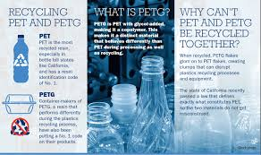
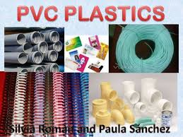
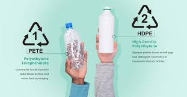

1 – Polyethylene Terephthalate (PET or PETE or Polyester) PET is mostly used for food and drink packaging purposes due to its strong ability to prevent oxygen from getting in and spoiling the product inside. It also helps to keep the carbon dioxide in carbonated drinks from getting out
2 – High-Density Polyethylene (HDPE) Quite special compared to the other types, HDPE has long virtually unbranched polymer chains which makes them really dense and thus, stronger and thicker from PET. HDPE is commonly used as the grocery bag, opaque milk, juice container, shampoo bottles, and medicine bottle
3 – Polyvinyl Chloride (PVC) The use of it may leach a variety of toxic chemicals such as bisphenol A (BPA), phthalates, lead, dioxins, mercury, and cadmium. Several of the chemicals mentioned may cause cancer; it could also cause allergic symptoms in children and disrupt the human's hormonal system.
